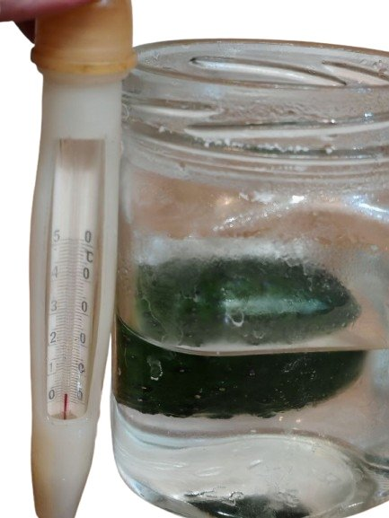
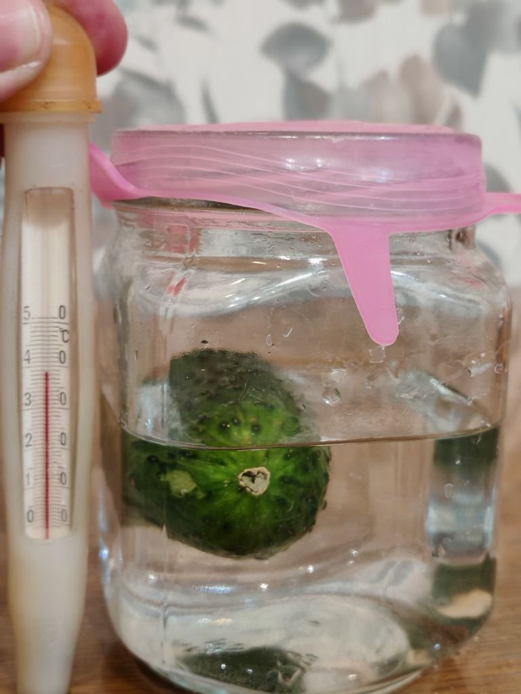
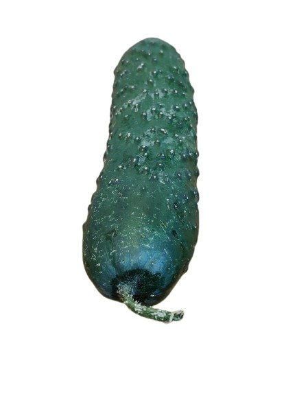
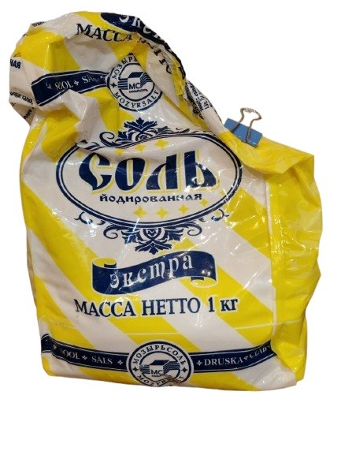
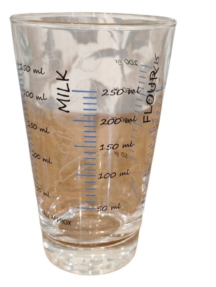
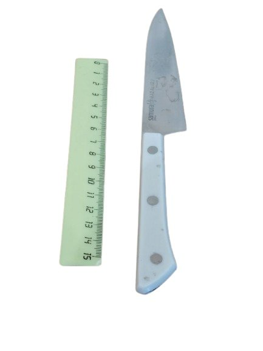
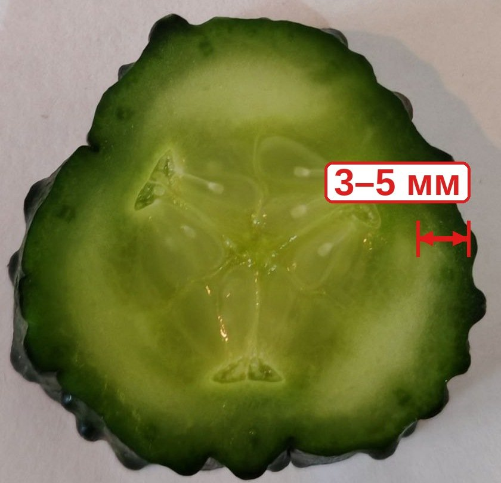
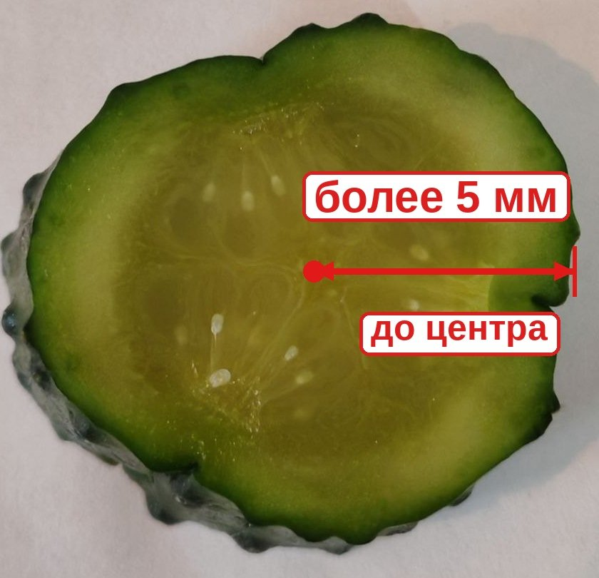

1. Паспорт эксперимента
Цель
Выяснить, как температура рассола влияет на скорость диффузии соли в огурец.
Объект исследования
Два кусочка одного огурца.
Гипотеза
В тёплом рассоле соль проникает в огурец быстрее и глубже, чем в холодном.
Начальные условия
| Параметр | А — холодный | Б — тёплый |
|---|---|---|
| Начальная масса | 56 г | 55 г |
| Рассол | 130 мл воды + 1⅓ ст. л. соли | 130 мл воды + 1⅓ ст. л. соли |
| Начальная температура | +4 °C | +40 °C |
| Где стояла банка | Холодильник | Комната, возле батареи |
| Начало опыта | 22 октября, 21:30 | |
| Окончание опыта | 25 октября, около 14:30 | |
2. Начало эксперимента
Так выглядели образцы сразу после того, как я опустила их в рассол и измерила температуру.

Начальная температура +4 °C

Начальная температура +40 °C
Оборудование и материалы




3. Дневник по дням
-
1
22 октября, 21:30 — старт
А: +4 °CБ: +40 °CМасса: А — 56 г, Б — 55 гВзвесила образцы и опустила их в рассол одинакового состава. Банку А поставила в холодильник, банку Б — в комнату возле батареи.
-
2
23 октября
А: +6 °CБ: +24 °CИзмерила температуру. Тёплый рассол остыл до комнатной температуры.
-
3
24 октября
А: +5 °CБ: +25 °CИзмерила температуру и продолжила наблюдать за образцами.
-
4
25 октября, около 14:30 — финал
А: +6 °CБ: +24 °CДо промокания: А — 51 г, Б — 52 гПосле промокания: А — 47 г, Б — 48 гДостала образцы, взвесила, промокнула салфеткой и взвесила ещё раз. Затем разрезала и измерила глубину проникновения соли на срезе.
Что я заметила: образец А
Огурец потемнел, уменьшился в размере, на кожуре появились морщины.
Что я заметила: образец Б
На огурце появились складки, рассол постепенно помутнел.
Температура рассола по дням, °C
Тёплый рассол не подогревался: к следующему дню он остыл до +24…+25 °C. Но даже так он оставался примерно на 20 °C теплее, чем холодный.
4. Финальные измерения — главное доказательство
| Параметр | А — холодный | Б — тёплый |
|---|---|---|
| Температура рассола | +4…+6 °C | +40 °C в начале, затем +24…+25 °C |
| Начальная масса | 56 г | 55 г |
| Масса до промокания | 51 г | 52 г |
| Конечная масса после промокания | 47 г | 48 г |
| Изменение массы | −9 г (≈ −16 %) | −7 г (≈ −13 %) |
| Глубина диффузии соли | 3–5 мм | более 5 мм (до центра) |
| Вид среза | Светлый, заметная граница у края | Темнее, однородный, границы нет |
Срезы после 3 дней в рассоле

Соль проникла только у края: 3–5 мм, середина светлая

Соль проникла более чем на 5 мм — срез однородный до центра
Нажми на фото, чтобы открыть исходный снимок в полном размере.
Глубина диффузии соли, мм
Масса образцов, г
5. Выводы и практическое применение
Гипотеза подтвердилась. При более высокой температуре скорость движения молекул увеличивается, поэтому диффузия соли в огурец в тёплом рассоле прошла быстрее: за 3 дня соль проникла более чем на 5 мм — до центра среза, а в холодном рассоле — только на 3–5 мм.
Нужно быстро — для салата
Используйте тёплый рассол: соль проникает быстрее.
Хранение и хруст
Лучше холодный способ: засолка идёт медленнее и равномернее.
6. Дополнительные материалы
- Плакат проекта (PDF, формат A2)
- Диффузия — статья в Википедии
- Осмос — статья в Википедии
- Учебник физики для 7 класса, тема «Диффузия в газах, жидкостях и твёрдых телах»
Благодарности
Спасибо моему руководителю Вороновой Ю. В. за помощь с проектом и родителям — за помощь с опытом и фотографиями.